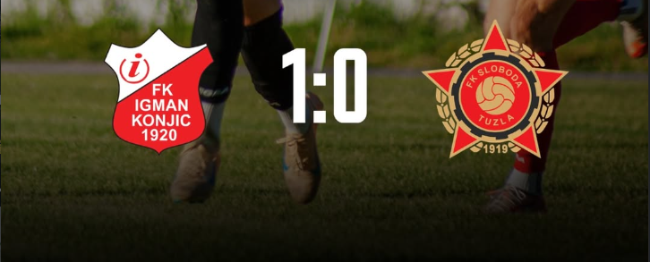
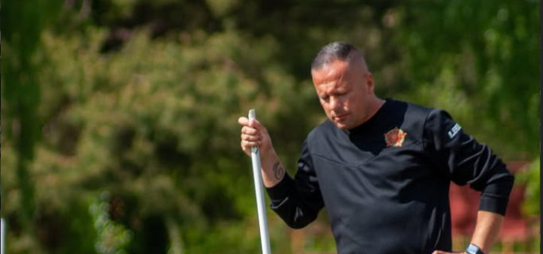
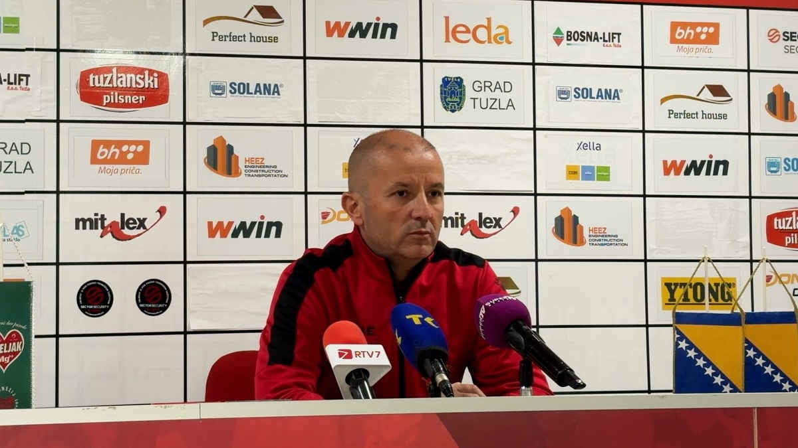
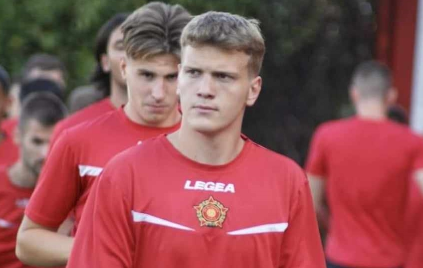
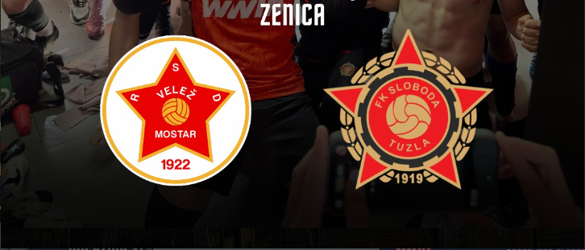
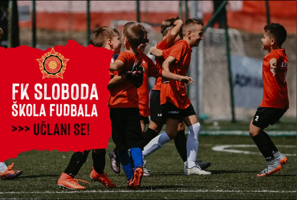

Poraz u Konjicu
Sloboda je kući otišla bez bodova u teškoj utakmici protiv Igman Konjica.
Pročitaj više

Šef stručnog štaba
Adnan Hodžić - Zadovoljan sam kako je ekipa odradila današnji trening.
Pročitaj više

Juniori u OMLADINSKOM FINALU KUPA
Naši juniori u utorak 5. Maj igraju FINALE OMLADINSKOG KUPA u Zenici
Pogledaj više